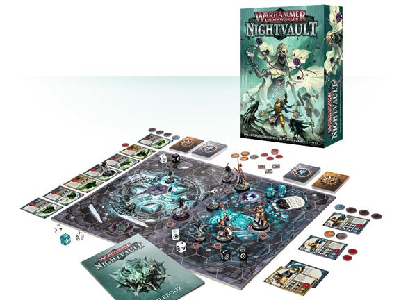
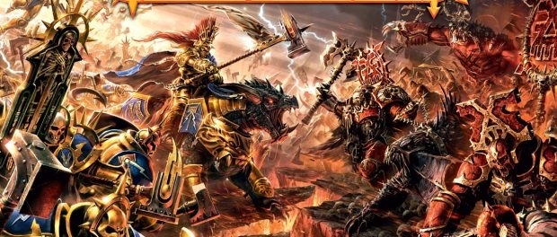

언더월드
1. 워해머 언더월드란? 워해머 세계관이야 요즘은 널리 알려져있죠. 스페이스 마린을 주인공으로 하는 머나먼 미래의 SF 테마의 워해머 40,000 (40k)와 판타지 세계관을 배경으로 하는 워해머 에이지 오브 지그마로 크게 나눌 수 있는데, 워해머 언더월드는 후자인 판타지 세계관에서 진행되는 게임입니다. 반지의 제왕을 필두로 한 판타지 세계관에 익숙한 사람들이라면 익히 알고 있는 오크, 엘프, 드워프, 고블린, 드래곤 등이 돌아다니는 그런 배경입니다. 워해머 에이지 오브 지그마의 전투. 언더월드는 요런 느낌은 아닙니다. 워해머 언더월드는 그런 세계의 몰락한 도시 중 하나인 셰이드스파이어 안에서 일어나는 작은 부대 간의 생존과 쟁탈전을 테마로 한 "보드게임"입니다. 보드게임을 강조한 이유는 기존 워해머는 보드게임이 아닌 테이블탑 미니어처 게임으로 분류되는, 즉 거대한 테이블 전체에 지형과 미니어처를 수백개를 깔아놓고 진행되는 형태의 게임이었던 반면, 워해머 언더월드는 A4 용지 크기의 보드 두개를 붙여놓고 손꼽힐 정도로 적은 수의 미니어처만 올려놓고 진행되는 말 그대로의 "보드게임"이기 때문입니다. 팩션당 최소 3모델짜리부터.. 최대 9모델까지 작은 규모로 진행이 되는 게임입니다.
2. 언더월드의 매력은? 기존에 다른 분이 적어주시기도 했지만 보드게임 리뷰라면 전 세계에서 순위권에 드는 유튜브 인플루언서 다이스 타워에서 워해머 언더월드에 10점 만점에 9점으로 엄청나게 고평가한 바 있습니다. 이 아저씨가 점수 주는데에 상당히 인색한 것을 생각해보면 놀라울 정도의 평점입니다. 정확히는 워해머 언더월드의 시즌1 격인 셰이드스파이어에 대해 9점으로 평가해주셨는데, 최근 시즌2인 나이트볼트에 대해서도 다시 리뷰를 했고, 마찬가지로 10점 만점에 9점을 줬습니다. 이 영상에서 정리된 장단점을 정리해보고 사견을 붙이자면
*장점
1) 직관적으로 잘 쓰여진 룰북: 적절한 도면과 예시가 많이 들어갔기 때문에 고평가를 한 것 같습니다. 실제로 게임 중 이 상황이라면 어떻게 해야 할까? 라고 고민할만한 상황에 대한 예시가 많이 수록되어 있습니다.
2) 균형잡힌 밸런스: 이런 대전게임의 게임성에 대해 평가할 때 가장 중요한 요소라고 봐도 과언이 아니죠. 현재까지 출시된 팩션은 10개 정도입니다만, 그냥 자기 마음에 드는걸 잡고 꾸준히 하면 될 정도로 밸런스가 잘 잡혀있습니다. 비쥬얼이 마음에 들더라도 종족 특성이 후져서 어쩔 수 없이 다른 팩션을 할 필요가 없이 하나만 파도 된다는 의미입니다.
3) 압도적인 미니어처: 평하기를 "미니어처의 수준은 압도적인 최고"라고 하면서 "쿨미니에서 나온 미니어처들도 훌륭하지만 여기에 비할 수는 없다" 라고 합니다. 실물을 보시면 아시겠지만 플라스틱 미니어처 조형의 정점입니다. 개성 넘치는 디자인에 디테일과 각이 엄청나게 예리한데, 이런 미니어처를 개당 가격 기준 레고 뽑기 미니피규어(4천원 내외)의 가격에 판매하고 있습니다. 이건 정말 사진으로 전달이 안되어 아쉬울 뿐입니다. 제가 제일 좋아하는 팩션 중 하나인 드워프입니다. 이 훌륭한 조형은 역사가 높게 평가
4) 전체적인 제품 완성도: 이건 잘 모르겠네요. 뭐 직접 뜯어본바 눈에 띄게 큰 하자는 없습니다만, 대부분의 제품이 다 그렇지 않나요?
*단점 1) 없다: 라고 이 아저씨는 말합니다... 샘 헤일리 말고 제가 개인적으로 생각하는 단점이야 여럿 있죠. 일단 그건 나중에 다뤄보도록 하고, 2판의 영상 들어서는 단점이 하나 추가됐는데 1) 미니어쳐가 가늘다: 실제로 2판 팩에 들어 있는 들장미여왕이라는 리더 미니어처는 조형이 정말 예쁘긴 한데 미니어처가 연약하게 가늘어서 잘못 던지면 부러질지도 모른다는 생각이 들긴 합니다. 아마 요 녀석이 문제인듯.. 제가 생각하는 언더월드의 가장 큰 매력은 뛰어난 밸런스에서 오는 다양성입니다. 저는 개인적으로 게임할 때 즐기는 것 못지 않게 지는 걸 싫어하는 편이라 가급적 소위 말하는 "약한 팩션"을 하지 않으려고 합니다. 아그리콜라처럼 다 똑같은 조건에서 시작하는 게임이면 모르되 사이쓰에서 노르딕을 절대 먼저 픽하지 않고, 넷러너에서는 한 때 아나크를 절대 플레이하지 않았습니다. 하지만 언더월드에서는 어떤 진영을 선택하더라도 게임이 재밌습니다. 스타에서 잘하는 종족은 있지만 친구들과의 게임에서는 랜덤으로 하더라도 재밌는 것처럼 어떤 진영을 플레이하더라도 재미를 보장한다는 것은 게임의 수명, 즉 리플레이성을 아주 크게 담보해줍니다. 한 진영으로 계속 하더라도 덱을 짜기에 따라 수비 중심, 공격 중심, 점령 중심으로 덱을 짜기에 따라 게임이 완전히 달라지기 때문에 모든 게임이 새롭고 기대가 됩니다. 실제로 저는 최근 한 두달은 언더월드밖에 플레이하지 않았는데도 불구하고 확장을 크게 늘리지 않았습니다. 처음 게임을 시작할 때 구비한 종족 5개만 해도 여전히 게임할 거리가 무궁무진하거든요. 물론 상성이 아예 없는 것은 아닙니다. 하지만 경험상 상성이 안맞는 팩션끼리 붙는다고 해도 실력이 비슷한 게이머라면 게임을 던져버릴 정도의 일방적인 구도가 나오진 않습니다. 실제로 발매된지 2년도 안된 게임이지만 세계의 여러 군데에서 지금도 대회가 열리고 있고, 제작사측에서도 공식적으로 개최한 대회가 성황리에 진행되는 것을 보면, 그저 단순한 게임이라고 보기에는 무리가 있습니다. 제작사측에서도 밸런스를 맞추는 데에 신경을 써 주는 편이라 최근 금지카드 3장을 비롯한 제한카드 목록을 발표하기도 했습니다. 현재는 시즌2인 나이트볼트의 시대인데, 1판의 모든 카드와 모든 팩션은 완벽하게 호환 가능하고 여전히 경쟁력이 있습니다. 실제로 저도 여전히 시즌2의 팩션보다 시즌1의 팩션을 더 자주 플레이합니다. 그 외에는 탄탄한 세계관이 주는 매력적인 설정과 스토리텔링.. 등이 있는데 이건 저만 그런 것 같고 주변 사람들은 설정 따위는 신경 안쓰더라구요.. 3. Q&A 글이 생각보다 길어지는 것 같아 오늘은 일단 자체적인 간단한 Q&A로 맺을까 합니다. 1) 워해머는 비싼 게임 아닌가요? 가장 의문이 많은 부분이 아닐까 합니다. 시작하기에 앞서 저는 제작사 및 판매업자와 어떤 개인적, 금전적인 관계도 없다는 것을 먼저 밝히면서, 사실 워해머는 일반 보드게임에 비하면 비싼게 맞습니다만, 워해머 언더월드는 그렇지 않습니다. 워해머는 정규 규모의 아미를 맞추려면 중고가 아닌 새 제품 기준으로 최소 20만원의 지출을 각오해야 합니다. 스타터셋만 해도 10만원 초중반에서 가격대가 형성되어 있는데요, 이게 다 얼마야... 언더월드는 스타터셋이 현판인 2판 나이트볼트가 국내 판매를 전담하고 있는 가게인 오크타운 정가 기준 5만원대에 불과합니다. 각 종족별 확장도 2만원대 중반입니다. 워해머는 종족을 선택하면 그 종족의 여러 병종을 구비하며 군대를 키워가는 과정에서 지출이 늘어나지만, 언더월드에서는 종족을 고르고 2만원짜리 박스를 사면 그 종족에서 구매 가능한 모델을 전부 구매한 것이기 때문에 그 종족의 미니어처를 늘린답시고 추가적인 구매를 할 필요가 없습니다. 스타터셋의 구성은 첫 사진에서 이미 보여드렸고, 팩션 박스 하나를 소개해드리자면, 고블린 팩션 세트 구성. 단돈 2.5만원. 고블린 장인 분들은 더 이상 미니어처를 추가할 필요가 없습니다. 다만 미니어처가 아니라 카드를 늘려가는 과정에서 지출이 생길 수는 있습니다. 특정 팩션이 너무 좋아서 그 팩션만 줄창 파서 장인이 되겠다 라고 결심하더라도, 여러 덱을 실험해볼 필요는 있으니까요, 그렇다 하더라도 일단 그 종족의 특성에 맞는 카드들은 전부 해당 팩션의 박스 안에 미니어처와 같이 들어있고, 스타터셋의 카드와 조합하면 이미 다양한 수가 나오는데다, 1만원대 중반에 다양한 카드만 팔고 있는 팩들을 팔고 있기 때문에 일반 워해머에 비하면 지출이 조족지혈입니다. 권장하는 것은 아니지만, 안 쓰는 카드에 덱프를 씌우고 한글화자료를 껴넣어서 지인들간 개인적으로만 사용한다면, 이쪽도 해결이 되는 부분입니다. 저는 지인들과 각자 갖고 있는 팩션들로만 게임을 돌리고 있고, 사용 카드는 스타터셋의 공용카드 + 각 팩션별 박스에 들어있는 카드를 조합해서 플레이하는데, 이렇게 되니 각 지인이 부담하는 금액은 원하는 해당 팩션의 박스 2.5만원 + 모임 카페 음료값 정도밖에 들지 않습니다. 참고로 최근 국내 동호회에서 열린 대회 역시 해당 팩션 팩 안에 있는 카드로만 진행한 바 있습니다. 저는 이놈들로만 대체 몇판을 돌렸는지.. 2) 게임할 상대가 없을 것 같아요. 스타터팩에 특성이 완전히 다른 종족 두개가 들어있기 때문에, 그것만 해도 지인과 플레이하는데에는 무리가 없습니다. 더 다양한 구성의 적들과 싸워보고 싶다, 하시면 매주 모임이 열리고 있으니 거기에 참가하시면 됩니다. 3) 영어가 어려운데 게임이 어렵지 않을까요? 위에서 말씀드린 바와 같이 감사하게도 한글화가 되어 있기 때문에 걱정하지 않으셔도 됩니다. 보라 자료실에서는 1판, 2판 스타터세트 및 2판 출시 이후 출시된 모든 카드를 갈가마귀님이 포토샵 작업까지 해서 올려주셨고, 1판 셰이드스파이어 룰북 및 확장 카드는 관련 카페에 전부 업로드가 되어 있는 것으로 알고 있습니다. 해당 카페 가입이나 다운로드는 게시글 몇개 작성 등 일정한 자격을 요하는 것도 아니니 필요하시면 가서 구하시면 됩니다. 4) 미니어처는 조립과 페인팅을 해야 하는 것 아닌가요? 저는 똥손이라 걱정되는데.. 물론 페인팅을 하면 게임이 더 살아나고 몰입되긴 합니다. 미니어처도 조립을 해야 하구요. 하지만 제작사측에서는 최근 이 부분을 걱정하는 사람이 많다는 것을 인지하고, 다음과 같은 해결책을 제시했는데, 그것은 가. 이지투빌드: 조립할 때 접착제 없이 그냥 레고마냥 끼워넣기만 하면 되는 형태로 모델제작법을 새로 고안했습니다. 나. 컬러 플라스틱: 모든 팩션이 팩션별로 플라스틱의 색이 다릅니다. 덕분에 굳이 페인팅을 하지 않아도 보드 위에서 명확히 피아가 구별이 되어 게임하는 데에 어려움이 없습니다. 일부 팩션의 미니어처. 페인팅을 하지 않아도 훌륭한 디테일은 가릴 수가 없습니다. 5) 인터넷 오픈마켓에 검색했는데 안나옵니다. 한국에서 살 수는 있는건가요? 워해머 관련 제품은 국내에서는 오크타운이 독점적으로 판매권을 갖고 있습니다. 합정에 있는 오프라인 매장에 방문하시거나, 온라인으로도 구매가 가능합니다. 온라인에서 품절로 뜨는 제품이라도 매장에는 있는 경우가 많고, 대체로 수 일 내에 다시 물건이 리필되는 모양입니다. 보라분들은 해외 직구에도 익숙하시니 아마존이나 미니어처 마켓에서도 구매하실 수 있습니다. 6) 사진들을 보니 2인 대전게임같네요. 다인플은 어렵겠어요. 공식 규칙상 4인까지 지원합니다. 다만 스타터셋에는 2명분의 보드와 미니어처밖에 없기 때문에 3인 이상 게임하기 위해서는 스타터셋을 추가로 구하시거나, 별도로 판매하는 보드판 등이 필요합니다. 3인플 중인 해외 게이머 그럼 언더월드에 대한 소개글은 이 정도로 하겠습니다. 언제가 될지는 모르겠지만 다음에는 대략적인 게임의 진행방법을 알아보고, 여유와 기회가 된다면 게임의 설정이나 각 팩션별 소개도 써볼까 합니다. 읽어주셔서 감사합니다. :)